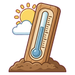
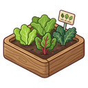
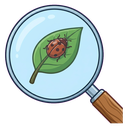
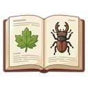

Plan the beds. Watch the frost. Grow it together.
A family garden planner for homeschool families. Lay out your beds, know what to plant this week where you live, and keep an eye on the pests and disease weather near you. A parent runs it and the kids pitch in. No account, no ads, and your garden stays on your phone.

Enter your ZIP code and the app works out your frost dates from 30 years of NOAA climate records built into the app, then checks the live soil temperature before it says go. See what to plant now, what’s coming up and what’s ready to pick, with a 16-day forecast, frost and heat alerts, and a season calendar for more than 90 vegetables, herbs, flowers and fruit.
Temperatures in Fahrenheit or Celsius, and sizes in feet and inches or centimeters.

Draw your yard to scale and add raised beds, in-ground beds, pots, grow bags, towers and row plots. Rectangles, L and U shapes, circles, ovals, keyholes, or drag the corners into any outline. Plant by the square foot or in true-spaced rows and see the plant count as you go. Change a bed’s shape and the plants re-space to fit.
Pick your crops and let the planner place them: spacing, good and bad neighbors, tall plants to the north, sun against shade, last year’s plant families, and which crops suit pots. It tells you why each plant went where it did, and everything stays editable.

See which pests people have reported nearby on iNaturalist or GBIF, a month-by-month pest calendar built from those local sightings, and a plain guide to 30 common pests and diseases with the gentlest fixes first. Get a nudge when squash vine borers are about and zucchini is in Bed 2.
Disease weather is worked out on your phone from the hourly forecast, using published infection-weather rules for blights, mildews and more. It tells you when conditions favor a disease. It isn’t a diagnosis, but it tells you which plants to keep an eye on.

The planner, plant guides and pest guide make it easy to teach as you garden. The kids can help plan the beds, learn what to plant when, and spot pests and what to do about them. Every job on the to-do list says why it matters, so anyone in the family can pick it up.
A garden journal keeps photos, finger drawings and notes about what you see, with a prompt for each day, linked to a plant or a bed.
Companion planting warnings, crop rotation by plant family, succession planting, a seed box, a harvest log, reminders from your plan, a printable plan, and a plan-to-shopping list with seed and supply quantities. Seven warm color themes, each in light and dark.
Get the app
Store availability as of November 19, 2026.
Or $14.99 a year with a 14-day free trial for new subscribers. The free version has no time limit, and if a subscription ends nothing you have made is deleted or locked away. Billed through the App Store or Google Play; cancel anytime in your store settings.
Unlike our flashcard apps, much of My Home Garden is free for good. Plus opens the season planning, the pest calendar and reminders.
$1.99 a month, or $14.99 a year with a 14-day free trial
There’s no sign-in and nothing to set up online. No analytics, no advertising and no tracking. Your gardens, journal and photos are kept on your device, and we can’t see them. Reminders and alerts are scheduled on your phone, with no push server.
For local weather and pest timing, the app sends rough coordinates for your area, rounded to about a kilometer, to Open-Meteo or the National Weather Service and to iNaturalist or GBIF. It checks with RevenueCat whether Plus is active. Your ZIP code is looked up inside the app and never sent. It doesn’t ask for your location.
Backup writes a file you can save to iCloud Drive, Google Drive or Files and restore on a new phone. Backups are always free. Questions? Email support@littleoatlearners.com and a real person will reply. The full details are in the app’s Privacy Policy.